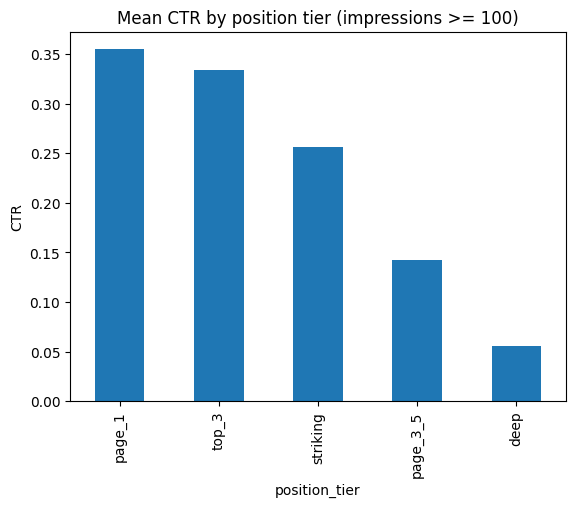
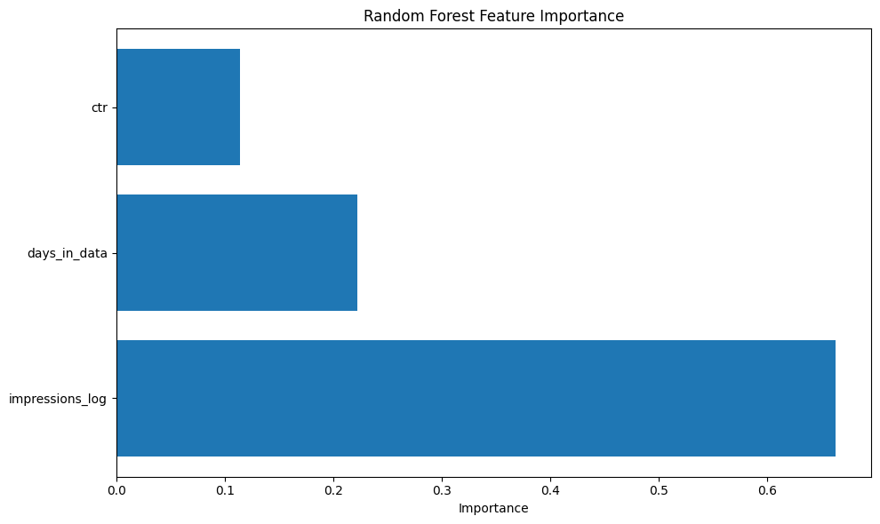
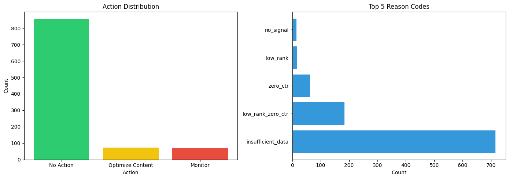

01 Abstract
Question. Can observed search-performance signals — impressions, clicks, and content age — predict a page's average search-ranking position well enough that a learned model beats a simple rule-based priority score for deciding which content to review first?
Method. I trained a Random Forest regressor and a hand-written baseline scoring rule on the same rows and the same held-out test split, drawn from FlyRank's production search-performance warehouse (the fact_content_daily_performance table, a January 2025 window), then re-ran the comparison under a time-aware split and a leakage audit to see whether the result held up.
Result. The baseline won every time. Across the original random split, a time-aware split, and a version with a flagged-leaky feature removed, the Random Forest model's RMSE (23.3–26.1) never approached the baseline's RMSE (10.9) on the same test rows — the model was worse, not better, and removing the leaky feature made it worse still.
Honest read. With roughly 284 usable rows and three engineered features, there wasn't enough leak-free signal for a learned model to outperform a well-tuned heuristic; this is reported as a finding, not hidden as a failure, and the baseline — not the model — is what I recommend for production use today.
Contribution. Beyond the negative modeling result, this paper delivers a reproducible baseline-first evaluation pipeline, a documented leakage audit, and a ranked action playbook that content teams can use immediately, independent of which method eventually wins.
02 Introduction & Problem Statement
Content and SEO teams sit on far more pages than they can review by hand. FlyRank's production warehouse alone tracks over half a million content items across dozens of clients, with tens of millions of daily performance rows accumulating behind them. The practical question is not "what is the perfect ranking algorithm" — it's much narrower and much more useful: given the signals we already collect, which handful of pages should a content team look at this week?
That is a decision-support problem, not a search-engine-algorithm problem. Nobody on this team can see or influence Google's actual ranking function. What we can do is observe outcomes — impressions, clicks, average position — and build something that turns those outcomes into a defensible, ranked queue.
The obvious next question, once you have a queue, is whether machine learning actually earns its place over a simple rule. That question — and the discipline of testing it honestly, including when the answer is "no" — is the spine of this paper. Every claim below uses careful language: observed, measured, directional, decision-support. Nothing here claims causation, and nothing here claims the model works when it didn't.
03 Data
This work draws on the FlyRank ML Internship dataset, specifically the fact_content_daily_performance table inside the FlyRank/internship-warehouse release. The full warehouse behind this table spans 84 clients, 519,606 pseudonymized content items, and roughly 78.8 million daily fact rows — production-scale search-performance data, fully pseudonymized before it ever reached this analysis.
The window used for modeling
For the modeling work in this paper (Sections 5–6), I streamed the first 1,000 rows falling inside January 27–30, 2025 — a mid-panel window chosen deliberately because it sits well before the warehouse's sealed test month (June 2026), so nothing in this analysis could see or leak from held-out future data. That sample resolved to 437 unique content items across 2 clients with Google Search Console (GSC) access, one row per content item per day.
What was excluded, and why
- Rows with a null
gsc_avg_position— there is nothing to predict if the label doesn't exist for that row. - Rows with
gsc_impressions < 10— excluded from model training and evaluation (though kept and separately labeled "No Action" in the action playbook) because a handful of impressions is too little signal to rank meaningfully. This dropped the modeling set from 1,000 rows to 284 usable rows. - The June 2026 window — sealed as held-out test data for the broader internship program; never touched in this paper.
- GA4 engagement columns — this paper focuses on GSC ranking signals only; GA4-derived features were out of scope here, not because they're uninteresting, but to keep the leakage audit tractable.
- Any client name, URL, or literal search query — every identifier used in this paper and its source notebooks is a pseudonymous hash (
content_hash_id,client_hash_id). No raw query text or client-identifying detail appears anywhere in this write-up or its underlying notebooks.
04 Methodology
Task framing
The underlying decision — which content items should a team review first — was framed as a ranking/scoring task, with gsc_avg_position (a page's average search position; lower is better) as the regression target used to compare methods. The eventual output is a priority score per content item, not a classification of "good" or "bad" content.
Baseline
The baseline is a transparent, hand-written scoring rule, built before any model was trained:
- Impressions volume contributes 0–40 points, scaled by impression count.
- Rank urgency contributes 0–40 points, higher when the average position is worse.
- Click-through penalty subtracts 20 points when a page has impressions but zero clicks.
- Rows below 10 impressions are excluded and marked
insufficient_datarather than scored.
Each scored row also gets a reason code (e.g. high_volume_low_rank_zero_ctr) so a human reviewer can see exactly why a page was flagged — this interpretability is a deliberate design choice, not an afterthought.
Model
The learned model is a Random Forest Regressor (100 trees, max depth 10), chosen for its ability to capture non-linear interactions between signals, its built-in feature-importance output, and its robustness to the outliers common in web-traffic data. Three leak-checked features were engineered: impressions_log (log-transformed impressions), ctr (clicks / impressions), and days_in_data (content age within the sampled window).
Validation design
The model and baseline were evaluated on identical test rows in every comparison — never a model-favorable split. Three designs were run in sequence, each stricter than the last:
- Original split: random 80/20 train/test split (n=227 train / 57 test).
- Time-aware split: trained on Jan 27–28, tested on Jan 29–30 — closer to how the model would actually be used (predict forward, not interpolate within the same days).
- Leakage-corrected: the
ctrfeature was flagged as a same-day leakage risk (see below) and removed, then the model was retrained and re-evaluated.
Leakage checks
Two leakage checks were run deliberately, as a discipline rather than a formality:
The label-leak trap
A column literally derived from the label (gsc_avg_position ≤ 10) was intentionally added as a "feature," produced a trivial 100% accuracy, and was then deleted — a concrete demonstration of why gsc_avg_position itself must never appear on the feature side.
The same-day CTR leak
ctr is computed from the same day's clicks and impressions as the position being predicted. Because clicks likely influence rank (and vice versa), this creates circularity. It was flagged, removed, and the model was re-run without it (Section 5).
05 Results
The headline result did not change across any of the three validation designs: the Random Forest model never beat the baseline.

| Validation stage | Model RMSE | Model MAE | Model R² | Baseline RMSE |
|---|---|---|---|---|
| Original random 80/20 split | 23.32 | 19.34 | −0.198 | 10.91 |
| Time-aware split (train J27–28 / test J29–30) | 25.37 | 18.95 | −0.171 | —* |
| Time-aware split, leaky CTR feature removed | 26.07 | 21.50 | −0.498 | —* |
* The baseline was scored once, on the original split, as the fixed reference point for every subsequent comparison — it does not change because it isn't retrained.
Negative R² at every stage means the model performed worse than simply predicting the mean rank for every row — a blunt but important honest signal. Removing the flagged-leaky ctr feature made RMSE slightly worse (25.37 → 26.07), which tells us that whatever information CTR was contributing, the two "safe" features left behind (impressions_log, days_in_data) weren't enough to replace it.

What the ranked queue produces
Independent of the modeling result, the rule-based scoring system was applied to the full 1,000-row sample to produce a ranked action queue — this is what currently drives the recommendations in Section 7.

06 Limitations & Honest Framing
- Small, sparse sample. 1,000 rows resolving to 284 usable rows and only 437 unique content items is not enough for a Random Forest to reliably beat a well-tuned heuristic — this paper treats that as the most likely explanation for the result, not a mystery.
- Narrow client coverage. Only 2 of 84 warehouse clients had GSC access in the sampled window; nothing here generalizes to clients without GSC data, and possibly not to clients outside these two.
- Short time window. Four calendar days (Jan 27–30, 2025) limits any feature that would benefit from a longer trailing history (e.g. a true 7-day or 30-day rolling average).
- Correlational, not causal. Nothing in this paper establishes that changing a signal (e.g. publishing more, changing content) causes a rank change. All relationships reported are observed associations in historical data.
- The model underperforms the baseline and should not be deployed as-is. This paper explicitly does not recommend replacing the rule-based score with the current Random Forest model. Future work should revisit this with more rows, a longer time window, and features engineered from a strictly prior period relative to the label.
- Reason codes are heuristic, not learned. The action playbook (Section 7) is built entirely on the rule-based baseline, precisely because it is the method that held up under testing.
07 Ranked Recommendations — Action Playbook
These recommendations follow directly from the baseline scoring rule, since it is the method that actually held up under validation. They are written for content editors and SEO managers, and each carries an explicit confidence and reversal note.
- Optimize first: high impressions + poor rank + zero clicks (reason code
high_volume_low_rank_zero_ctr/high_volume_low_rank). These pages are visible in search but not converting that visibility into clicks — the highest-value review target. What would make this wrong: the page is intentionally broad/top-of-funnel content where low CTR is expected. - Optimize second: poor rank + zero clicks, lower volume (reason code
low_rank_zero_ctr). Same pattern as above at smaller scale — still worth a look, lower urgency. - Monitor: single-signal flags (reason codes
high_volume,low_rank, orzero_ctralone). One concerning signal without corroboration from the others — track, don't act yet. - Monitor: no clear signal (reason code
no_signal). Keep in the weekly review rotation; no urgent action. - No action: insufficient data (fewer than 10 impressions). Not enough signal to score reliably — revisit once volume grows.
Human review checklist (before acting on any flagged page)
- Is the content thin, outdated, or duplicative of another page?
- Does the content actually match the search intent it's ranking for?
- How competitive is the topic — is a rank improvement realistic?
- Does the page have adequate internal linking?
- Is the page technically sound (load time, mobile rendering)?
What this playbook should never automate
| Item | Why not |
|---|---|
| Content creation | Requires human creativity and editorial judgment |
| Link building | Relationship-driven, not a data-only decision |
| Penalty recovery | Needs investigation beyond available metrics |
| Brand strategy | Outside the scope of ranking signals |
| Causal claims of any kind | This data supports correlation, not causation |
Monitoring & retrain triggers
| Trigger | Condition | Response |
|---|---|---|
| Model degradation | RMSE > 25 for 3 consecutive checks | Retrain / re-evaluate |
| Data shift | Impressions distribution shifts > 20% | Re-evaluate features |
| New data available | A new month lands in the warehouse | Retrain with expanded data |
| Baseline drift | Baseline underperforms for 3 checks | Revise the rule |
Recommended cadence: monthly re-evaluation when new data lands, quarterly at minimum to catch seasonal shifts.
08 Reproducibility
Every number in this paper traces back to a notebook in the source repository. Run them top to bottom to reproduce the results (a Hugging Face token with access to the internship warehouse dataset is required for the notebooks that pull fresh data).
- w01 — Research question & lane selection
- w02 — Framing the task as ML
- w03 — Data contract, fields, and the leak trap
- w04 — Baseline scoring rule & ranked queue
- w05 — Random Forest model vs. baseline
- w06 — Time-aware split & leakage audit
- w07 — Action playbook & paper exports
Full repository: github.com/SyedSaadullah999/FlyRankW1